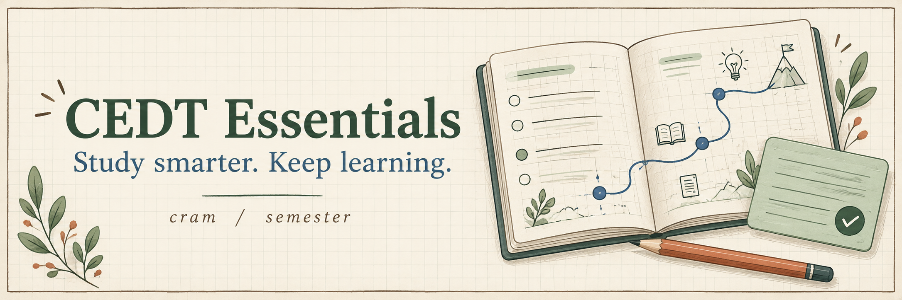

OPEN STUDY TOOLKIT / LIVE EXAMPLES

เรียนให้เข้าใจ
แล้วไปต่อด้วยตัวเอง
เลือกอ่านบทสั้นก่อนสอบ หรือวางเส้นทางเรียนระยะยาว ทุกตัวอย่างใช้ธีมสมุดโน้ตเดียวกับสกิลจริง
01 / CRAM · 15 MIN
จากสไลด์
สู่ความเข้าใจ
บทเรียน Probability สั้น ๆ พร้อมสไลด์ตัวอย่าง คำถามให้คิดก่อนเปิดเฉลย และโจทย์ตรวจคำตอบทันที
เปิดตัวอย่าง cram →02 / SEMESTER · 6 WEEKS
เปลี่ยนเป้าหมาย
เป็นตารางเรียน
คอร์ส Python สำหรับงานข้อมูล มี roadmap กำหนดส่งวันอาทิตย์ งานประจำสัปดาห์ และ handbook สองบทแรก
เปิดตัวอย่าง semester →ลองกดอะไรได้บ้าง?
- ตอบคำถามใน cram แล้วกลับมาดูความคืบหน้าที่สารบัญ
- เปิดแผนรายสัปดาห์ใน semester และทดลองส่งบันทึกงาน
- สลับ light / dark mode หรือเปิดบนมือถือ
เกี่ยวกับ demo: เนื้อหาและสไลด์สร้างขึ้นใหม่เพื่อสาธิต ไม่มีสไลด์ คลิป หรือข้อมูลผู้เรียนจริง ระบบสอบ AI ของ semester ต้องใช้ Claude artifact จึงไม่เปิดในเว็บสาธิตนี้ ข้อมูลทดลองเก็บเฉพาะเบราว์เซอร์ของคุณ ไม่มีการส่งงานไปหาอาจารย์